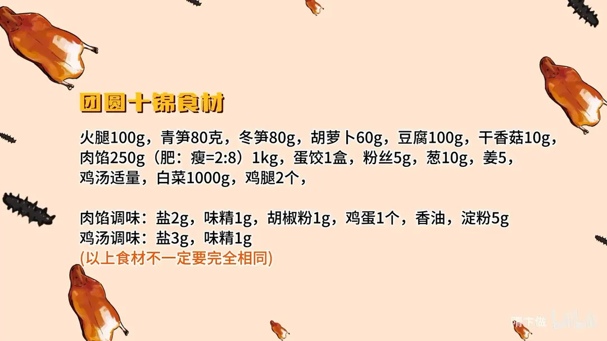
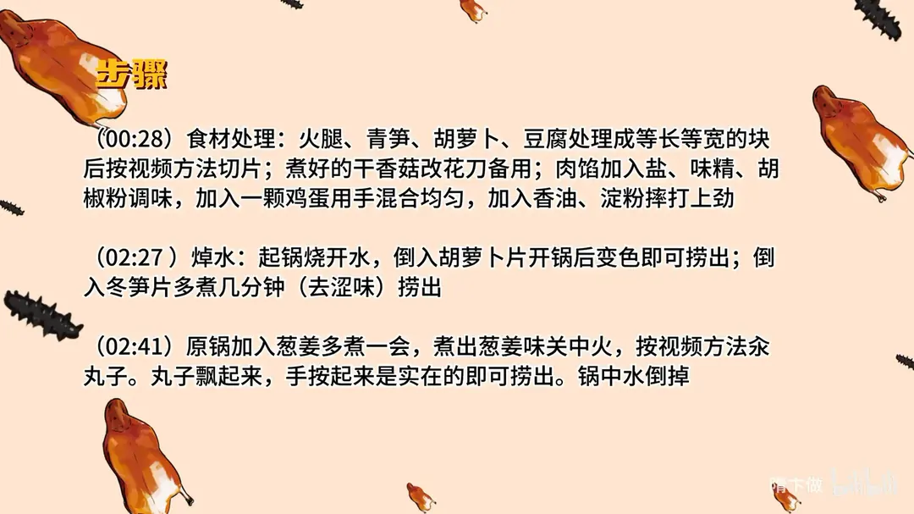
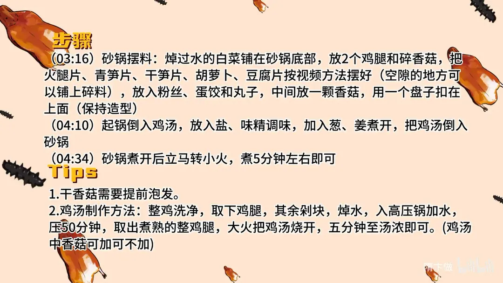

团圆十锦
隋卞一做。白菜 1000g 焯水铺砂锅底，火腿、青笋、冬笋、胡萝卜、豆腐切成等长等宽的片，配肉馅汆的丸子、蛋饺、粉丝、2 个鸡腿层层码好；鸡汤加 3g 盐、1g 味精调味浇入，小火煨 5 分钟。
原视频：https://www.bilibili.com/video/BV13F4m1M7Y1
食材
火腿、青笋、冬笋 等 22 样
| 类别 | 用料 | 用量 |
|---|---|---|
| 主料 | 火腿 | 100g |
| 主料 | 青笋 | 80g |
| 主料 | 冬笋 | 80g |
| 主料 | 胡萝卜 | 60g |
| 主料 | 豆腐 | 100g |
| 主料 | 肉馅（肥:瘦=2:8） | 250g（另标 1kg） |
| 主料 | 蛋饺 | 1 盒 |
| 主料 | 白菜 | 1000g |
| 主料 | 鸡腿 | 2 个 |
| 配料 | 干香菇 | 10g |
| 配料 | 粉丝 | 5g |
| 调料 | 葱 | 10g |
| 调料 | 姜 | 5g |
| 调料 | 鸡汤 | 适量 |
| 腌料 | 盐 | 2g |
| 腌料 | 味精 | 1g |
| 腌料 | 胡椒粉 | 1g |
| 腌料 | 鸡蛋 | 1 个 |
| 腌料 | 香油 | 适量 |
| 腌料 | 淀粉 | 5g |
| 调料 | 盐（调鸡汤） | 3g |
| 调料 | 味精（调鸡汤） | 1g |
步骤
- 食材处理：火腿、青笋、胡萝卜、豆腐处理成等长等宽的块，再按视频方法切片；煮好的干香菇改花刀备用；肉馅加盐、味精、胡椒粉调味，打入一颗鸡蛋用手混合均匀，再加香油、淀粉摔打上劲。
- 焯水：起锅烧开水，倒入胡萝卜片，开锅后变色即可捞出；再倒入冬笋片多煮几分钟去涩味，捞出。
- 汆丸子：原锅加葱姜多煮一会，煮出葱姜味后关火，按视频方法汆丸子；丸子飘起来、手按上去是实的即可捞出，锅中水倒掉。
- 砂锅摆料：焯过水的白菜铺在砂锅底部，放 2 个鸡腿和碎香菇；火腿片、青笋片、干笋片、胡萝卜、豆腐片按视频方法摆好（空隙处可铺上碎料），放入粉丝、蛋饺和丸子，中间放一颗香菇，用一个盘子扣在上面保持造型。
- 调汤：起锅倒入鸡汤，放盐、味精调味，加入葱、姜煮开，把鸡汤倒入砂锅。
- 小火煨：砂锅煮开后立即转小火，煮 5 分钟左右即可。
小贴士
- 干香菇需要提前泡发。
- 鸡汤做法：整鸡洗净取下鸡腿，其余剁块焯水，入高压锅加水压 50 分钟；取出煮熟的整鸡腿，大火把鸡汤烧开，煮 5 分钟至汤浓即可（鸡汤中香菇可加可不加）。
- 以上食材不一定要完全相同，家里有什么可随宜替换。
讲解要点
难度：★★★☆☆（火候不难，难在刀工——各种片切得等长等宽，还要码出造型）
为什么这么做
- 所有片切成一样长一样宽：这道菜吃的是造型，长短不一的片码不出层次，一摆就散。
- 前后两片去掉、碎头垫底：两头不成形，去掉才能对齐；碎头不浪费，垫在底下看不出来。
- 胡萝卜先焯、冬笋多煮几分钟：胡萝卜生着硬、又容易卷曲，焯软后才好切好摆；冬笋带涩味，多煮去涩。
- 白菜垫底：白菜出水多、又占分量，垫在底下既撑起高度，又隔开锅底防止扒锅。
- 肉馅打鸡蛋、加淀粉摔上劲、不加水：鸡蛋让丸子嫩，淀粉让它黏，摔上劲汆出来才弹、不散。
- 丸子浮起来、手按是实的才算好：浮起说明熟透，按下去有回弹说明上劲到位，软塌塌的还没打好。
- 砂锅扣盘小火煨 5 分钟：扣盘子压住造型，小火煨让鸡汤慢慢渗进去，又不会把料冲散；蛋饺是生的，这 5 分钟同时也是把馅煨熟。
容易翻车
- 片切得长短不一，码上去层次就乱，盘子一扣造型全塌。
- 肉馅水加多了或者没摔上劲，丸子下锅就散、煮成一锅浑汤。
- 胡萝卜、冬笋不焯直接摆，硬的摆不平，冬笋还带涩味。
- 砂锅火大滚起来，扣着的盘子被顶翻、料冲散。
- 煨的时间不够，蛋饺里的肉馅还是生的。
原片尾卡



原片文案
AI 字幕校准稿
团圆十锦。这次结合实战，但你们不要被吓退，这个菜很简单，也很上档次。它做起来非常简单，唯一稍微复杂点的就是切各种各样的东西。
先说切火腿，切成这样薄厚的片。下一个是笋片，笋和胡萝卜都是一样的，主要是搭配颜色；所有的原料长短尽可能一致。豆腐可以切得稍微厚点，为了长短一致，前后去两片，切下来的碎头码的时候可以码到底下，也不浪费。
切片的东西切完了。煮好的干香菇上面打一个十字花刀，非常漂亮，搁在中间；剩下的改下刀，垫在下面就可以了。
肉馅要调个味，团团圆圆得用圆的。放入葱姜米，2 克盐、1 克味精、1 克胡椒，打上一个鸡蛋。打入鸡蛋后它有点软乎乎的，打一会儿就黏糊了。再来点香油、5 克淀粉，自己吃的就实在一点。水一点都不加，全靠这个鸡蛋。
锅烧开水，把胡萝卜焯一下——胡萝卜不煮老是卷曲的形状，不好把控，开锅变色就可以。同样的水不用换，锅里加上葱姜，多煮一会儿煮出葱姜味。然后关中火，把丸子放里边，大小随意，小的好熟、还能多汆几个。飘起来了，用手摁是实的，就好了。
所有原料处理完，开摆。焯过水的白菜铺在下面占分量，还能防止扒锅，然后放鸡腿、煮过的香菇，再摆所有的片：火腿、豆腐、青笋片、冬笋。摆的时候哪儿空就拿点碎料垫一垫，修修补补。下边垫点粉丝，然后放蛋饺、丸子，把最好看的一块香菇放在中间，找一个盘扣上，保持形状。
把我们提前煮好的鸡汤倒到锅里边，加盐调味，加一克味精，加上葱姜，补一克盐。调好的鸡汤倒进去，放到火上烧开，开锅以后转小火，一定记住煮 5 分钟，因为蛋饺是生的、豆腐也要入味。
吃个蛋饺。其实大家应该都能想象到它的味道，鸡汤那种味道很浓香，也不会盖住上面这几种东西的本味。今天北京大降温，吃上这么一锅，真的特别舒服。
过年了，热热乎乎的，非常喜庆，祝大家团团圆圆。